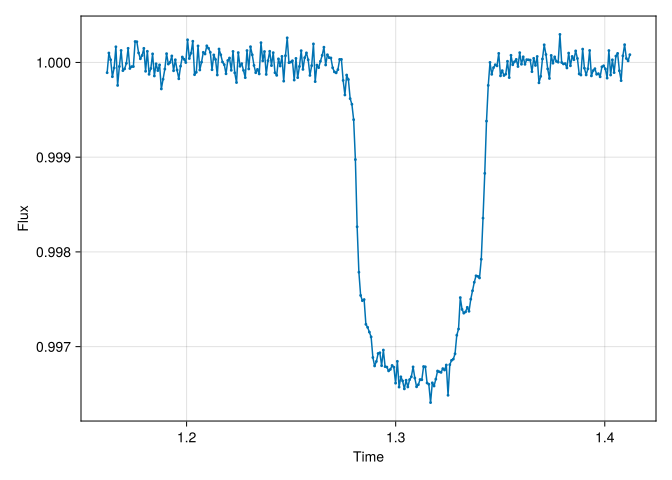

Code
dir = "docs/courses/epss298_DataAnalysis"
if isdir(dir)
cd(dir)
Pkg.activate(".")
Pkg.instantiate()
cd("projects")
endTransiting Exoplanet
Your team detected a planet candidate in the data from the Transiting Exoplanet Survey Satellite (TESS). The data is very noisy, but you are relatively confident the planet is there.
Based on the TESS data, you can predict that the center of the next transit will be between the time t = 1.212 days and t = 1.362 days [Note: t is measured relative to an arbitrary reference time]. The TESS data also tell you that the radius of the planet is between 1% and 10% the radius of the star. Unfortunately, you don’t know where the planet crosses the star, i.e. the impact parameter is unconstrained between 0 and 1. Assume that the orbital period is exactly known to be 3.0 days.
You wrote a proposal and successfully convinced the time allocation committee of the James Webb Space Telescope (JWST) to obtain new very precise data for you. YAY!!!
You receive the data in Project1_JWST_data.csv. The errors are 10-4=0.01% on each data point in the light curve.
From these data, you want to determine new estimates with uncertainties for the transit time, the planet-to-star radius ratio, and the impact parameter.
Batman: https://lkreidberg.github.io/batman/docs/html/index.html
dir = "docs/courses/epss298_DataAnalysis"
if isdir(dir)
cd(dir)
Pkg.activate(".")
Pkg.instantiate()
cd("projects")
endusing CSV, DataFrames
using CairoMakie
path = "./Project1_JWST_data.csv"
data = CSV.read(path, DataFrame)
f = Figure()
plot(f[1, 1], data.time, data.flux)
f
using CondaPkg
using PythonCall
CondaPkg.add("batman-package")
const batman = pyimport("batman")
const pyTransitModel = batman.TransitModelCondaPkg Found dependencies: /Users/zijin/projects/beforerr/docs/courses/epss298_DataAnalysis/CondaPkg.toml CondaPkg Found dependencies: /Users/zijin/.julia/packages/PythonCall/WMWY0/CondaPkg.toml CondaPkg Initialising pixi │ /Users/zijin/.julia/artifacts/d2fecc2a9fa3eac2108d3e4d9d155e6ff5dfd0b2/bin/pixi │ init │ --format pixi └ /Users/zijin/projects/beforerr/docs/courses/epss298_DataAnalysis/.CondaPkg ✔ Created /Users/zijin/projects/beforerr/docs/courses/epss298_DataAnalysis/.CondaPkg/pixi.toml CondaPkg Wrote /Users/zijin/projects/beforerr/docs/courses/epss298_DataAnalysis/.CondaPkg/pixi.toml │ [dependencies] │ openssl = ">=3, <3.6" │ batman-package = "*" │ │ [dependencies.python] │ channel = "conda-forge" │ build = "*cpython*" │ version = ">=3.8,<4" │ │ [project] │ name = ".CondaPkg" │ platforms = ["osx-arm64"] │ channels = ["conda-forge"] │ channel-priority = "strict" └ description = "automatically generated by CondaPkg.jl" CondaPkg Installing packages │ /Users/zijin/.julia/artifacts/d2fecc2a9fa3eac2108d3e4d9d155e6ff5dfd0b2/bin/pixi │ install └ --manifest-path /Users/zijin/projects/beforerr/docs/courses/epss298_DataAnalysis/.CondaPkg/pixi.toml WARN Using local manifest /Users/zijin/projects/beforerr/docs/courses/epss298_DataAnalysis/.CondaPkg/pixi.toml rather than /Users/zijin/projects/beforerr/pyproject.toml from environment variable `PIXI_PROJECT_MANIFEST` ✔ The default environment has been installed. CondaPkg Found dependencies: /Users/zijin/projects/beforerr/docs/courses/epss298_DataAnalysis/CondaPkg.toml CondaPkg Found dependencies: /Users/zijin/.julia/packages/PythonCall/WMWY0/CondaPkg.toml CondaPkg Initialising pixi │ /Users/zijin/.julia/artifacts/d2fecc2a9fa3eac2108d3e4d9d155e6ff5dfd0b2/bin/pixi │ init │ --format pixi └ /Users/zijin/projects/beforerr/docs/courses/epss298_DataAnalysis/.CondaPkg ✔ Created /Users/zijin/projects/beforerr/docs/courses/epss298_DataAnalysis/.CondaPkg/pixi.toml CondaPkg Wrote /Users/zijin/projects/beforerr/docs/courses/epss298_DataAnalysis/.CondaPkg/pixi.toml │ [dependencies] │ openssl = ">=3, <3.6" │ batman-package = "*" │ │ [dependencies.python] │ channel = "conda-forge" │ build = "*cpython*" │ version = ">=3.8,<4" │ │ [project] │ name = ".CondaPkg" │ platforms = ["osx-arm64"] │ channels = ["conda-forge"] │ channel-priority = "strict" └ description = "automatically generated by CondaPkg.jl" CondaPkg Installing packages │ /Users/zijin/.julia/artifacts/d2fecc2a9fa3eac2108d3e4d9d155e6ff5dfd0b2/bin/pixi │ install └ --manifest-path /Users/zijin/projects/beforerr/docs/courses/epss298_DataAnalysis/.CondaPkg/pixi.toml WARN Using local manifest /Users/zijin/projects/beforerr/docs/courses/epss298_DataAnalysis/.CondaPkg/pixi.toml rather than /Users/zijin/projects/beforerr/pyproject.toml from environment variable `PIXI_PROJECT_MANIFEST` ✔ The default environment has been installed.
Python: <class 'batman.transitmodel.TransitModel'>using DrWatson: @dict
"""Like `batman.TransitParams` in Python, but with some keyword arguments for convenience."""
function TransitParams(; ecc=0.0, w=0.0, limb_dark="quadratic", kwargs...)
params = batman.TransitParams()
for (key, value) in merge(kwargs, @dict(ecc, w, limb_dark))
setproperty!(params, key, value)
end
return params
end
TransitModel(params, time) = pyTransitModel(params, Py(time).to_numpy())
function light_curve(params, time)
m = TransitModel(params, time)
flux = m.light_curve(params)
return PyArray(flux)
endlight_curve (generic function with 1 method)Write a function for your physical “forward” model that takes in a vector with these three parameters:
flux = let rp = 0.01, t0 = 1.311544, b = 0.1
per = 3
a = 15
inc = acosd(b / a)
params = TransitParams(; t0, per, rp, a, inc, u=[0.3, 0.3])
light_curve(params, data.time)
end
plot(f[2, 1], data.time, flux)
f
# Transit time between 1.212 and 1.362 days
# Planet radius between 1% and 10% of star radius
# Impact parameter between 0 and 1
function log_prior(t0, rp, b)
if 1.212 <= t0 <= 1.362 && 0.01 <= rp <= 0.10 && 0 <= b <= 1
0.0 # Log of 1, uniform prior within constraints
else
-Inf # Log of 0, zero probability outside constraints
end
end
log_prior(params) = log_prior(params...)
function log_likelihood(params, time, obs, error;
per=3.0, # Period in days
a=15.0, # Semi-major axis in stellar radii
u=[0.3, 0.3] # Limb darkening coefficients
)
t0, rp, b = params
inc = acosd(b / a) # Inclination in degrees
transit_params = TransitParams(; t0, per, rp, a, inc, u)
model_flux = light_curve(transit_params, time)
# Calculate log-likelihood (assuming Gaussian errors)
residuals = obs .- model_flux
chi_squared = sum((residuals ./ error) .^ 2)
-0.5 * chi_squared
end
function log_probability(params, time, obs, error)
log_prior(params) + log_likelihood(params, time, obs, error)
endlog_probability (generic function with 1 method)Determine new estimates with uncertainties of the planet-to-star radius ratio and the impact parameter. Fix the transit mid-time to t0 = 1.311544 days. Make a 50x50 grid that explores planet-to-star radius ratios between 0.05275 and 0.53505 as well as impact parameters between 0 and 0.3.
using LinearAlgebra # For eigen decomposition and other matrix operations
using Statistics # For statistical functions
using StatsBase
# Fix transit mid-time to t0 = 1.311544 days
fixed_t0 = 1.311544
# Create a 50x50 grid for rp and b
n_grid = 50
rp_grid = range(0.05275, 0.053505, length=n_grid)
b_grid = range(0.0, 0.3, length=n_grid - 10)
# Calculate the log posterior for each grid point
log_posterior_grid = [
log_probability([fixed_t0, rp, b], data.time, data.flux, 1e-4)
for rp in rp_grid, b in b_grid
]
posterior_grid = exp.(log_posterior_grid .- maximum(log_posterior_grid)) # (subtract max to avoid numerical issues)
posterior_grid = posterior_grid ./ sum(posterior_grid) # Normalize the posterior
# Find the maximum posterior point
max_idx = argmax(posterior_grid)
best_rp = rp_grid[max_idx[1]]
best_b = b_grid[max_idx[2]]
println("Best fit values: rp = $(best_rp), b = $(best_b)")
b_label = "Impact parameter (b)"
rp_label = "Planet-to-star radius ratio (rp)"
fig = Figure(size=(1000, 800))
ax1 = Axis(fig[1, 1], xlabel=rp_label, ylabel=b_label, title="Joint Posterior Distribution")
hm = heatmap!(ax1, rp_grid, b_grid, posterior_grid)
scatter!(ax1, [best_rp], [best_b], color=:red, markersize=15)
Colorbar(fig[1, 1, Right()], hm, label="Posterior Probability")
figBest fit values: rp = 0.053150612244897956, b = 0.2076923076923077Plot the marginalized posterior distributions for the planet-to-star radius ratio and the impact parameters.
rp_posterior = vec(sum(posterior_grid, dims=2))
rp_posterior = weights(rp_posterior ./ sum(rp_posterior)) # Normalize
b_posterior = vec(sum(posterior_grid, dims=1))
b_posterior = weights(b_posterior ./ sum(b_posterior)) # Normalize
ax2 = Axis(fig[2, 1], xlabel=rp_label, ylabel="Probability")
lines!(ax2, rp_grid, rp_posterior)
ax3 = Axis(fig[1, 2], xlabel=b_label, ylabel="Probability")
lines!(ax3, b_grid, b_posterior)
fig
- Calculate the mean and +/-1 sigma uncertainties for both parameters. Mark the mean value with a solid vertical line in the figure created in Step 3.2. Make the +/-1 sigma uncertainties with dashed vertical lines. Report the best estimates (mean and uncertainty) for both parameters quantitatively.
# For rp
rp_mean = mean(rp_grid, rp_posterior)
rp_std = std(rp_grid, rp_posterior)
# For b
b_mean = mean(b_grid, b_posterior)
b_std = std(b_grid, b_posterior)
# Add mean and +/- 1 sigma to the marginalized plots
vlines!(ax2, [rp_mean], color=:black, linewidth=2)
vlines!(ax2, [rp_mean - rp_std, rp_mean + rp_std], color=:black, linestyle=:dash)
vlines!(ax3, [b_mean], color=:black, linewidth=2)
vlines!(ax3, [b_mean - b_std, b_mean + b_std], color=:black, linestyle=:dash)
# Print the results
println("Planet-to-star radius ratio (rp):")
println("Mean: $(rp_mean), Uncertainty: ±$(rp_std)")
println("Impact parameter (b):")
println("Mean: $(b_mean), Uncertainty: ±$(b_std)")
figPlanet-to-star radius ratio (rp):
Mean: 0.05313398853620246, Uncertainty: ±0.00011072698866302457
Impact parameter (b):
Mean: 0.2039876597230059, Uncertainty: ±0.00894400281537162
using Distributions, LinearAlgebra
# Calculate covariance matrix elements
function covariance_matrix(p, x, y)
x_2d = repeat(x, 1, length(y))
y_2d = repeat(y', length(x), 1)
wp = weights(p)
x_mean = mean(x_2d, wp)
y_mean = mean(y_2d, wp)
# Calculate covariance matrix elements
cov_x_x = mean((x_2d .- x_mean) .^ 2, wp)
cov_y_y = mean((y_2d .- y_mean) .^ 2, wp)
cov_x_y = mean((x_2d .- x_mean) .* (y_2d .- y_mean), wp)
return [cov_x_x cov_x_y; cov_x_y cov_y_y]
end
cov_matrix = covariance_matrix(posterior_grid, rp_grid, b_grid)
@info "Covariance matrix:" cov_matrix
# Calculate correlation coefficient
corr_coef = cov_matrix[1, 2] / (sqrt(cov_matrix[1, 1]) * sqrt(cov_matrix[2, 2]))
@info "Correlation coefficient:" corr_coef┌ Info: Covariance matrix: │ cov_matrix = │ 2×2 Matrix{Float64}: │ 1.22605e-8 3.77026e-7 └ 3.77026e-7 7.99952e-5 ┌ Info: Correlation coefficient: └ corr_coef = 0.38070264831558437
function getellipsepoints(cx, cy, rx, ry, θ; length=100)
t = range(0, 2π; length)
ellipse_x_r = @. rx * cos(t)
ellipse_y_r = @. ry * sin(t)
R = [cos(θ) sin(θ); -sin(θ) cos(θ)]
r_ellipse = [ellipse_x_r ellipse_y_r] * R
x = @. cx + r_ellipse[:, 1]
y = @. cy + r_ellipse[:, 2]
(x, y)
end
function getellipsepoints(μ, Σ, confidence=0.95)
quant = quantile(Chisq(2), confidence) |> sqrt
egvs = eigvals(Σ)
if egvs[1] > egvs[2]
idxmax = 1
largestegv = egvs[1]
smallesttegv = egvs[2]
else
idxmax = 2
largestegv = egvs[2]
smallesttegv = egvs[1]
end
rx = quant * sqrt(largestegv)
ry = quant * sqrt(smallesttegv)
eigvecmax = eigvecs(Σ)[:, idxmax]
θ = atan(eigvecmax[2] / eigvecmax[1])
if θ < 0
θ += 2π
end
getellipsepoints(μ..., rx, ry, θ)
endgetellipsepoints (generic function with 3 methods)μ = [rp_mean, b_mean]
Σ = cov_matrix
lines!(ax1, getellipsepoints(μ, Σ)..., label="95% confidence interval")
lines!(ax1, getellipsepoints(μ, Σ, 0.5)..., label="50% confidence interval")
fig
Step 4: Solve the full problem using MCMC and Nested Sampling Determine new estimates with uncertainties of the transit time, the planet-to-star radius ratio, and the impact parameter 1. Using Emcee. Make all possible plots and quantitative assessments to convince the reviewer that your results are converged 2. Using Dynesty. Make all possible plots and quantitative assessments to convince the reviewer that your results are converged
Step 5: Investigate whether you model is a good fit to the data Investigate the residuals. What do you think? Quantitatively and graphically assess whether your model is a good fit to the data.
Step 6: Refine your physical model
1. What could explain your findings in Part 4? Tip: When a distant observer sees a transit of the Earth in front of the sun, would it only be the Earth that is transiting at that time?
2. Code a new physical “forward” model and log-likelihood function that better explains the data.
3. Use Dynesty to find the constraints of both objects. Treat the moon like another body transiting shortly before or after. Use the same prior for the moon. That makes six parameters.
4. Make plots to convince the reviewer that your results are converged
5. Determine quantitatively whether the model justifies applying this more complex model? How confident are you that you detected a moon?
6. Summarize your results for the parameters for each object?
7. Why do you get a multi-modal solution? What could you do to avoid this in this simple example?
Step 7: Describe in a few sentences one example for a problem or data set that you could analogously solve in your research domain?